Installing the HP Officejet 6100, 6230 and 8100 Printers
Scope

|
Note—For Panther SW 6.2 and above, the printer driver does not need to be installed. The printer only needs to be plugged into the computer then selected in the Panther SW > Admin > Configuration. |
The following printers replace the obsolesced HP 6000 and HP 8000.
|
|
Note—When changing printer models, a field service representative will need to reassign the existing printer drivers to the new printer. |
|
|
Note—The Officejet 6230 printer does NOT have the Auto Shutoff Option. |
Parts and Materials Required
- New printer model:
- HP Officejet 6100
- HP Officejet 6230
- HP Officejet Pro 8100
- USB printer cable
- Printer paper
Time Required
- 30 minutes
Procedure
- Unpack the printer.
- Remove the protective tape and packing materials.
- Install the provided ink cartridges (refer to setup guide provided with the printer).
- Load paper (refer to setup guide provided with the printer).
- Power on the Panther PC and press any key when the PANTHER Main Shield appears to prevent the PANTHER Main Assay
 Procedures required to prepare and perform a specific test. In the context of this document, assay refers exclusively to a Hologic test, such as Aptima Combo or Ultrio. Software from launching.
Procedures required to prepare and perform a specific test. In the context of this document, assay refers exclusively to a Hologic test, such as Aptima Combo or Ultrio. Software from launching. - Press Shift + F10 and login to the FSE Shield.
- Select Windows Explorer.
- Install the HP 6100, 6230 or 8100 printer by plugging it into the Panther PC USB port. Connect the power cord and turn printer power on.
Note—A Windows message stating “Found New Hardware: Windows needs to install driver software for your Officejet….” Dialog box (as shown below) may pop-up, if so; click “Don’t show this message again for this device”. The same dialog box may re-appear, click “Don’t show this message again for this device” once again.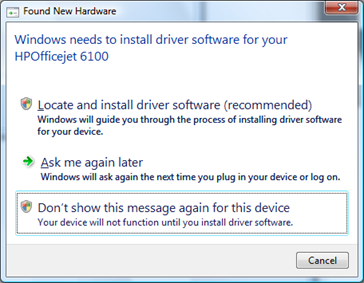
- In Windows Explorer navigate to Control Panel then Printers.
- Click on “Add a printer”. This will take you to the “Add Printer” wizard.
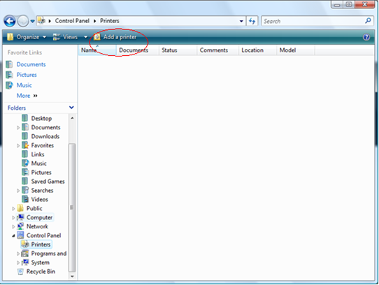
- You will be asked to choose a local or network printer. Click "Add a local printer".
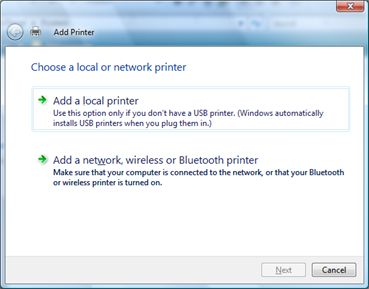
- You will be asked to choose a printer port. Select “Use an existing port” then select the last listed “USB00x (Virtual printer port for USB)” (USB001 in the example below) and then click “Next”.
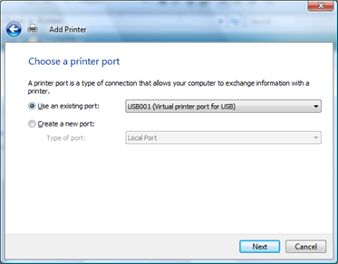
- You will be asked to install the printer driver. Select “HP” from the manufacturer list. Then from the Printers model list select the applicable option, and click “Next”.
- For HP 6100 and 6230 printers, select “HP Officejet 6000 E609n Series”
Note—Windows 7 operating systems will have duplicate HP Officejet 6000 E609n Series entries on the manufacturer list. Always select the last entry you see on the list for the E609n Series or you will get an installation error. - For HP 8100 printers, select “HP Officejet Pro 8000 A809 Series”
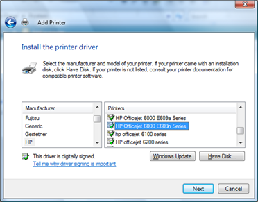
- If prompted “Which version of the driver do you want to use?” select “Use the driver that is currently installed (recommended)” then click Next.
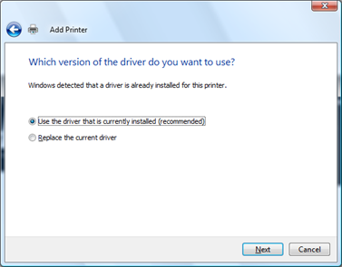
- You will be asked to Type a printer name, click “Next” to keep the default printer name or you may optionally change the name then click “Next”.
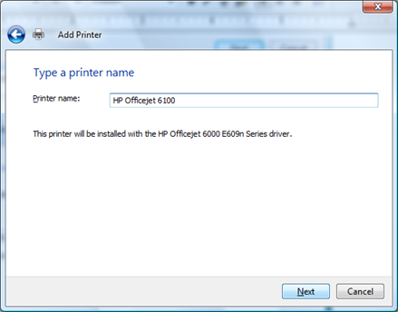
- If Printer Sharing is displayed, select “Do not share this printer”, then click “Next”.
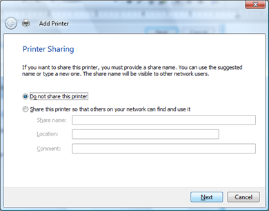
- When notified that “You’ve successfully added HP Officejet…” click on the “Print a test page” button and verify a test page has been printed.
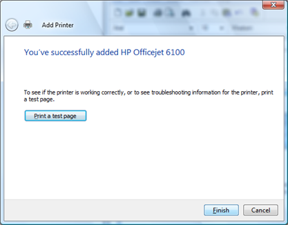
- At the “A test page has been sent to your printer” message box, click on the “Close” button.
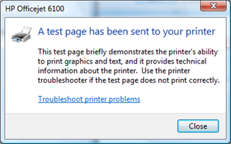
- Click on “Finish” on the “You’ve successfully added HP Officejet…”.
- Return to the Windows Explorer window (ALT Accelerated Life Test-TAB if needed) and verify that the printer has been added under Control Panel>Printers
Note—You may need to right-click on the printers panel in Windows Explorer then select “Refresh” from the pop-up menu in order to refresh the listing of the recently added printers. - Close Windows Explorer to return to the Panther Shield.
Note— The following driver software message may appear once you login to Panther, if so, click “Don’t show this message again for this device”. The same dialog box may re-appear, click “Don’t show this message again for this device” once again.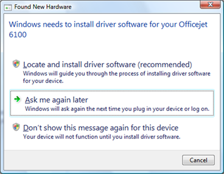
Verification
- Verify the printer is working by printing a report or test page from the Panther GUI.
- Make sure to Disable the Auto Shutoff Feature.
- If this is an installation, continue to Operational Qualification.
 button at the top of the page to send feedback, comments, or change requests.
button at the top of the page to send feedback, comments, or change requests.